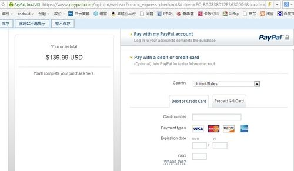
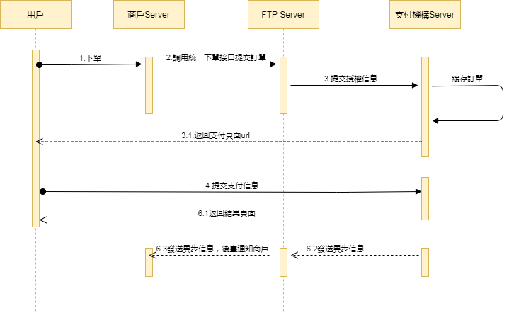

Global Payments Online 無卡支付 Card Pay（Online） - 託管
卡支付_Global Payments Online
無卡支付接口文檔（託管）
| 時間 | 版本 | 修改內容 |
|---|---|---|
| 2025-12-19 | 1.0 | 初稿 |
1引言
1.1文檔概述
無卡支付是指：付款人藉助互聯網、移動互聯網、無線局域網等渠道進行的，不需要物理卡片通過受理設備（ATM、POS等）讀取，即可向收款人轉移可以接受的貨幣債權的支付方式。無卡支付接口適用於不存在物理卡的情況下進行支付的場景，如互聯網購買車票、火車票、網上購物、第三方平臺支付等。通過無卡支付可以方便持卡人的信用卡交易行為，減少了交易環節的流程。同時呢也滿足了大眾消費需求。
商家使用平臺提供接口進行對接，通過商戶生成的訂單參數提供給服務提供商，並喚起支付，支付成功後獲取相關支付資訊的支付方式。
場景示例：

支付流程:
步驟（1）：用戶在PC或者移動端商城上麵點擊提交訂單。
步驟（2）：顯示訂單金額幷選擇無卡支付。
步驟（3）：輸入信用卡號碼和有效期安全碼等安全驗證消息，點擊支付。
步驟（4）：支付機構扣款顯示支付結果頁面。
1.2閱讀對象
供商戶平臺服務方技術或業務人員參考和查詢。
2方案概述
2.1 業務實現流程
接口調用時序：
下單接口 API、支付通知接口API和查詢訂單API等都涉及簽名過程，調用都必須在商戶伺服器端完成。 時序圖如下：

3數據格式
3.1 提交數據
除下單接口外採用 HTTPS 標準的 POST 協議，為了保證接收方接收數據正確,傳輸數據必須簽名。
{
"service":"pay.globalpayment.card.notpresent",
"order_no":"",
"transaction_id":"FTP202012181537420001",
"client_id":"1001",
"store_id":"1001001",
"nonce_str":"bz5zqumn",
"sign":"CD51286B6211CB73DB4FD95CEF7EC55E"，
"lang":"en_US"
}
3.2 返回結果數據格式
正確返回：
{
"message":"SUCCESS",
"transaction_id":"FTP202012181537420001",
"order_no":"01c6a794745e4538a9cb20ceffe1423c",
"store_id":"1001001",
"submit_time":"20201218153742",
"trade_state":"SUCCESS",
"amount":102.21,
"currency":"USD",
"payer":"JohnDoe",
"pay_finish_time":"20201218153743",
"body":"Office cabinet, good quality, very beautiful",
"refund_amount":0,
"nonce_str":"y97cl1nr",
"sign":"981566CDE97F43D27851A9238B0C429F"
}
錯誤返回：
{
"message":"Missing Merchant ID",
JSON"errors":[
{
"field":"mch_id",
"message":"Missing Merchant ID",
"code":"MISSING_FIELD"
}
]
}
message返回非SUCCESS時表示接口調用出錯。
4數字簽名
為了保證資料傳輸過程中的資料真實性和完整性，我們需要對資料進行數字簽名，在接收簽名資料之後進行簽名校驗。
數字簽名有兩個步驟， 先按一定規則拼接要簽名的原始串，再選擇具體的演算法和密鑰計算出簽名結果。
4.1 簽名原始串
無論是請求還是應答，簽名原始串按以下方式組裝成字串： 1、除 sign 欄位外，所有參數按照欄位名的 ascii 碼從小到大排序後使用 QueryString 的格式（即key1=value1&key2=value2…） 拼接而成，空值不傳遞，不參與簽名組串。 2、簽名原始串中，欄位名和欄位值都採用原始值，不進行 URL Encode。
3、平臺返回的應答或通知消息可能會由於升級增加參數，請驗證應答簽名時注意允許這種情況。
舉例：
調用某個接口，接口有如下欄位：
{
"client_id":"1001",
"store_id":"1001001",
"service":"pay.globalpayment.card.notpresent",
"order_no":"43e83019eb1941dba5fa27f97b398627",
"number":"4111111111111111",
"card_type":"VISA",
"expiration_year":"2031",
"expiration_month":"12",
"amount":"4244.00",
"currency":"USD",
"first_name":"John",
"last_name":"Doe",
"address":"1 Market St",
"bill_locality":"san francisco",
"administrative_area":"CA",
"postal_code":"94105",
"country":"GB",
"email":"test@cybs.com",
"phone":"4158880000",
"body":"Office cabinet,
good quality,
very beautiful",
"client_ip":"127.0.0.1",
"nonce_str":"gyej53wz",
"sign":"D8018D80F164A46C53BF1D6ADC8D8EB1"
}
正確的簽名欄位排序為：
address=1 Market St&administrative_area=CA&amount=4244.00&bill_locality=san francisco&body=Office cabinet, good quality, very beautiful&card_type=VISA&client_ip=127.0.0.1&country=GB¤cy=USD&email=test@cybs.com&expiration_month=12&expiration_year=2031&first_name=John&last_name=Doe&client_id=1001&nonce_str=gyej53wz&number=4111111111111111&order_no=43e83019eb1941dba5fa27f97b398627&phone=4158880000&postal_code=94105&service=pay.globalpayment.card.notpresent&store_id=1001001
4.2 簽名演算法
MD5 簽名 MD5 是一種摘要生成演算法，通過在簽名原始串後加上商戶通信金鑰的內容，進行 MD5 運算，形成的摘要 字串即為簽名結果。為了方便比較，簽名結果統一轉換為大寫字元。
注意：簽名時將字串轉化成位元組流時指定的編碼字元集應與參數 charset 一致。 MD5 簽名計算公式： sign = MD5 (原字串+&key=商戶祕鑰).toUpperCase
假設商戶祕鑰為：MjNiYWE4NGY2YTMxNDk2MTljODBkMjZkMjk0NjAxY2M=
如： 假設以下為 JSON傳入參數： i： 經過 a 過程 URL 鍵值對字典序排序後的字串 string1 為： address=1 Market St&administrative_area=CA&amount=4244.00&bill_locality=san francisco&body=Office cabinet, good quality, very beautiful&card_type=VISA&client_ip=127.0.0.1&country=GB¤cy=USD&email=test@cybs.com&expiration_month=12&expiration_year=2031&first_name=John&last_name=Doe&client_id=1001&nonce_str=gyej53wz&number=4111111111111111&order_no=43e83019eb1941dba5fa27f97b398627&phone=4158880000&postal_code=94105&service=pay.globalpayment.card.notpresent&store_id=1001001 ii： 經過 b 過程後得到 sign 為：
sign = md5(string1+&key=商戶祕鑰).toUpperCase
實際加密字符串為：
sign = md5(address=1 Market St&administrative_area=CA&amount=4244.00&bill_locality=san francisco&body=Office cabinet, good quality, very beautiful&card_type=VISA&client_ip=127.0.0.1&country=GB¤cy=USD&email=test@cybs.com&expiration_month=12&expiration_year=2031&first_name=John&last_name=Doe&client_id=1001&nonce_str=gyej53wz&number=4111111111111111&order_no=43e83019eb1941dba5fa27f97b398627&phone=4158880000&postal_code=94105&service=pay.globalpayment.card.notpresent&store_id=1001001&key=MjNiYWE4NGY2YTMxNDk2MTljODBkMjZkMjk0NjAxY2M=).toUpperCase
最終得到的簽名為：450D4C7163D44302BAD0C75A7EDE38AF
sign與 lang字段不參與接口簽名，接口返回參數解密規則同理
5 接口描述
5.1 下單接口
5.1.1 業務功能
商戶調用下單接口後或生產回應的參數返回給商戶，商戶通過判斷支付管道喚起支付機構進行支付操作，支付完成後支付機構回檔平臺，平臺會將結果通知商戶接口。
5.1.2 交互模式
請求：後臺同步請求模式
返回結果+通知： 後臺請求交互模式+後臺通知交互模式
5.1.3 請求參數列表
請求 url：https://api.fintechpaymenthub.com/openapi/v1/pay-gui.html
通過 POST FORM表單提交方式進行請求
| 欄位名 | 變數名 | 必填 | 類型 | 說明 |
|---|---|---|---|---|
| 接口類型 | service | 是 | String(40) | 固定：pay.globalpayment.card.notpresent |
| 客戶端ID | client_id | 是 | String(32) | 商戶客戶端ID |
| 門店ID | store_id | 是 | String(50) | 門店ID |
| 商戶訂單號 | order_no | 是 | String(32) | 商戶系統內部的訂單號 32 個字元內、 可包含字母 確保在商戶系統唯一 |
| 通知地址 | notify_url | 是 | String(255) | 接收平臺通知的 URL，需給絕對路徑， 255 字符內，格式如:http://wap.tenpay.com/tenpay.asp， 確保平臺能通過互聯網訪問該地址 |
| 回調地址 | callback_url | 是 | String(255) | 交易支付完成返回商戶指定的頁面，需給絕對路徑，255 字元以內，確保平臺能通過互聯網訪問該地址，香港錢包才支持此字段 |
| 金額 | amount | 是 | String(15) | 訂單總金額（必須大於 0），單位為元。 |
| 幣種 | currency | 是 | String(3) | 3位元幣種編碼 |
| 商品描述 | body | 否 | String(127) | 商品描述資訊 |
| 終端IP | client_ip | 否 | String(16) | 訂單生成的機器 IP |
| 隨機字串 | nonce_str | 是 | String(32) | 隨機字串，不長於 32 位，每次提交需傳不同的值 |
| 簽名 | sign | 是 | String(32) | 詳見第 4 章 “簽名規則” |
| 語言 | lang | 否 | String(32) | 語言 |
5.1.4 返回結果
支付結果按照通知的方式通知到接口，支付完成後會跳轉到提供的回調地址。
5.1.5測試用例
提供了測試用例方便調用，需要在html頁面中的form表單中加入以下參數，幷發起post請求到提供的接口
發起提交的數據：
| Example |
|---|
| <!DOCTYPE html> <html lang="en"> <head> <meta charset="UTF-8"> <title>DEMO</title> </head> <body> <form id="payForm" action="{接口地址}" method="post"> <span>client_id：<input type="text" id="client_id" name="client_id" value="1621842104875jkn"><br> <span>store_id：<input type="text" id="store_id" name="store_id" value="HKG-238-123-135-32423123-002"><br> <span>service：<input type="text" id="service" name="service" value="pay.globalpayment.card.notpresent"><br> <span>order_no：<input type="text" id="order_no" name="order_no" value="4e808885f0784032b70cd4137f209ab8"><br> <span>amount：<input type="text" id="amount" name="amount" value="100"><br> <span>currency：<input type="text" id="currency" name="currency" value="HKD"><br> <span>body：<input type="text" id="body" name="body" value="Office cabinet, good quality, very beautiful"><br> <span>client_ip：<input type="text" id="client_ip" name="client_ip" value="127.0.0.1"><br> <span>notify_url：<input type="text" id="notify_url" name="notify_url" value="http://127.0.0.1/pima-pay/v1/notify/feedbackTest"><br> <span>callback_url：<input type="text" id="callback_url" name="callback_url" value="http://127.0.0.1/pima-pay/v1/pay-gui/demo/result.html"><br> <span>nonce_str：<input type="text" id="nonce_str" name="nonce_str" value="xu44ma13"><br> <span>sign：<input type="text" id="sign" name="sign" value="E23F397671D80FA8433EF92223F5EE61"><br> <input type="submit" id="submit" name="submit" value="Submit"/> <span>lang：<input type="text" id="lang" name="lang" value="en_US "><br> <input type="submit" id="submit" name="submit" value="Submit"/> </form> </form> </body> </html> |
成功後通知的數據：
| Example |
|---|
| { "reasonCode":"100", "message":"Request was processed successfully.", "orderNo":"4e808885f0784032b70cd4137f209ab8", "transactionId":"FTP202106181604300001", "outTransactionId":"6240035143606620203005", "storeId":"HKG-238-123-135-32423123-002", "submitTime":"20210618160430", "tradeState":"SUCCESS", "amount":100, "currency":"HKD", "payer":"xxxxxxxxxxxx0002", "payFinishTime":"20210618160526", "nonceStr":"21asv8o3", "tradeType":"pay.globalpayment.card.notpresent", "sign":"FCD5302A8E3B8890EC83F3C684A49524", "payCurrency":"HKD" } |
5.2 調起支付接口
5.2.1 業務功能
商戶由於某些原因關閉了下單接口跳轉的支付頁面，需要再次支付時使用此接口調起支付，支付完成後將會跳轉到回調地址，平臺會將結果通知商戶接口。
5.2.2 交互模式
請求：後臺同步請求模式
返回結果+通知： 後臺請求交互模式+後臺通知交互模式
5.2.3 請求參數列表
請求 url：https://api.fintechpaymenthub.com/openapi/v1/pay-again-gui.html
通過 POST FORM表單提交方式進行請求
| 欄位名 | 變數名 | 必填 | 類型 | 說明 |
|---|---|---|---|---|
| 接口類型 | service | 是 | String(40) | 固定：pay.globalpayment.card.notpresent |
| 客戶端ID | client_id | 是 | String(32) | 商戶客戶端ID |
| 門店ID | store_id | 是 | String(50) | 門店ID |
| 商戶訂單號 | order_no | 否 | String(32） | 商戶生成的訂單號 |
| FTP訂單號 | transaction_id | 否 | String(26） | FTP訂單號, order_no 和 transaction_id 至少一個必填，同時存在時 transaction_id 優先 |
| 隨機字串 | nonce_str | 是 | String(32) | 隨機字串，不長於 32 位 |
| 簽名 | sign | 是 | String(32) | 詳見第 4 章 “簽名規則” |
5.2.4 返回結果
支付結果按照通知的方式通知到接口，支付完成後會跳轉到提供的回調地址。
5.2.5測試用例
提供了測試用例方便調用，需要在html頁面中的form表單中加入以下參數，幷發起post請求到提供的接口
發起提交的數據：
| Example |
|---|
| <!DOCTYPE html> <html lang="en"> <head> <meta charset="UTF-8"> <title>DEMO</title> </head> <body> <form id="payForm" action="{接口地址}" method="post"> <span>client_id：<input type="text" id="client_id" name="client_id" value="1621842104875jkn"><br> <span>store_id：<input type="text" id="store_id" name="store_id" value="HKG-238-123-135-32423123-002"><br> <span>service：<input type="text" id="service" name="service" value="pay.globalpayment.card.notpresent"><br> <span>order_no：<input type="text" id="order_no" name="order_no" value="4e808885f0784032b70cd4137f209ab8"><br> <span>transaction_id：<input type="text" id="transaction_id" name="transaction_id" value=""><br> <span>nonce_str：<input type="text" id="nonce_str" name="nonce_str" value="xu44ma13"><br> <span>sign：<input type="text" id="sign" name="sign" value="E23F397671D80FA8433EF92223F5EE61"><br> <input type="submit" id="submit" name="submit" value="Submit"/> </form> </body> </html> |
成功後通知的數據：
| Example |
|---|
| { "reasonCode":"100", "message":"Request was processed successfully.", "orderNo":"4e808885f0784032b70cd4137f209ab8", "transactionId":"FTP202106181604300001", "outTransactionId":"6240035143606620203005", "storeId":"HKG-238-123-135-32423123-002", "submitTime":"20210618160430", "tradeState":"SUCCESS", "amount":100, "currency":"HKD", "payer":"xxxxxxxxxxxx0002", "payFinishTime":"20210618160526", "nonceStr":"21asv8o3", "tradeType":"pay.globalpayment.card.notpresent", "sign":"FCD5302A8E3B8890EC83F3C684A49524", "payCurrency":"HKD" } |
5.3 訂單查詢接口
5.3.1 業務功能
根據商戶訂單號或者FTP訂單號查詢平臺的具體訂單資訊。
5.3.2 交互模式
後臺系統調用交互模式
5.3.3 請求參數列表
請求 url：https://api.fintechpaymenthub.com/openapi/v1/query 通過 POST JSON 內容體進行請求
| 欄位名 | 變數名 | 必填 | 類型 | 說明 |
|---|---|---|---|---|
| 接口類型 | service | 是 | String(40) | 固定：pay.globalpayment.card.notpresent |
| 客戶端ID | client_id | 是 | String(32) | 商戶客戶端ID |
| 門店ID | store_id | 是 | String(50) | 門店ID |
| 商戶訂單號 | order_no | 否 | String(32） | 商戶生成的訂單號 |
| FTP訂單號 | transaction_id | 否 | String(26） | FTP訂單號, order_no 和 transaction_id 至少一個必填，同時存在時 transaction_id 優先 |
| 隨機字串 | nonce_str | 是 | String(32) | 隨機字串，不長於 32 位 |
| 簽名 | sign | 是 | String(32) | 詳見第 4 章 “簽名規則” |
| 語言 | lang | 否 | String(32) | 語言 |
5.3.4 返回結果
數據按 JSON 的格式即時返回
| 欄位名 | 變數名 | 必填 | 類型 | 說明 |
|---|---|---|---|---|
| FTP訂單號 | transaction_id | 是 | String(26) | FTP生成的訂單號 |
| 商戶訂單號 | order_no | 是 | String(32) | 商戶生成的訂單號 |
| 門店ID | store_id | 是 | ||
| 提交時間 | submit_time | 是 | String(50) | 格式為 yyyyMMddhhmmss |
| 交易狀態 | trade_state | 是 | String(32) | SUCCESS—支付成功 REFUND—退款 NOTPAY—待付款 FAIL—失敗 |
| 金額 | amount | 是 | Double | 此值不能為負 |
| 幣種 | currency | 是 | String(3) | 3 位元 ISO 貨幣代碼，大寫字母，人民幣為 CNY。 |
| 卡類型 | card_type | 是 | String(20) | 卡類型 VISA、MASTER、UNION_PAY |
| 付款方 | payer | 是 | String(50) | 付款方 |
| 支付完成時間 | pay_finish_time | 是 | String(32) | 支付完成時間，格式為 yyyyMMddhhmmss， 如2009 年 12 月 27 日 9 點 10 分 10 秒錶示為20091227091010。 時區為 GMT+8 beijing。 |
| 商品描述 | body | 是 | String(127) | 商品描述資訊 |
| 退款金額 | refund_amount | 是 | Double | 退款金額 |
| 結果信息 | message | 是 | String(500) | 描述查詢結果，SUCCESS表示成功，否則返回其他錯誤信息 |
| 隨機字串 | nonce_str | 是 | String(32) | 隨機字串，不長於 32 位 |
| 簽名 | sign | 是 | String(32) | 詳見第 4 章 “簽名規則” |
5.3.5測試用例
提供了測試用例方便調用
發起提交的數據：
| Example |
|---|
| { "service":"pay.globalpayment.card.notpresent", "order_no":"", "transaction_id":"FTP202012181537420001", "client_id":"1001", "store_id":"1001001", "nonce_str":"bz5zqumn", "sign":"CD51286B6211CB73DB4FD95CEF7EC55E", "lang":"en_US" } |
成功返回的數據：
| Example |
|---|
| { "message":"SUCCESS", "transaction_id":"FTP202012181537420001", "order_no":"01c6a794745e4538a9cb20ceffe1423c", "store_id":"1001001", "submit_time":"20201218153742", "trade_state":"SUCCESS", "amount":102.21, "currency":"USD", "payer":"JohnDoe", "pay_finish_time":"20201218153743", "body":"Office cabinet, good quality, very beautiful", "refund_amount":0, "nonce_str":"y97cl1nr", "card_type":"MASTER", "sign":"981566CDE97F43D27851A9238B0C429F" } |
5.4 支付通知接口
5.4.1 業務功能
支付完成後系統會通知相關數據到下單時填寫的notify_url，通知URL是支付接口中提交的參數 notify_url，支付完成後，平臺會把相關支付和用戶資訊發送到該URL，
商戶需要接收處理資訊。
對後臺通知交互時，如果平臺收到商戶的應答不是純字串success或超過5秒後返回時，平臺認為通知失敗，平臺會通過一定的策略（通知頻率為 0/15/15/30/180/1800/1800/1800/1800/3600，單位：秒）間接性重新發起通知，盡可能提高通知的成功率，但不保證通知最終能成功。
由於存在重新發送後臺通知的情況，因此同樣的通知可能會多次發送給商戶系統。商戶系統必須能夠正確處理重複的通知。
推薦的做法是，當收到通知進行處理時，首先檢查對應業務數據的狀態，判斷該通知是否已經處理過，如果沒有處理過再進行處理，如果處理過直接返回結果成功。在對業務數據進行狀態檢查和處理之前，要採用數據鎖進行併發控制，以避免函數重入造成的數據混亂。
特別注意：商戶後臺接收到通知參數後，要對接收到通知參數裏的訂單號order_no 和訂單金額amount和自身業務系統的訂單和金額做校驗，校驗一致後才更新資料庫訂單狀態後臺通知通過請求中的 notify_url 進行，post 方式返回數據流，具體資訊是 xml 格式的串（商戶方在處理時要注意）
5.4.2 交互模式
後臺通知模式
5.4.3 返回參數列表
數據按 JSON 的格式即時返回
| 欄位名 | 變數名 | 必填 | 類型 | 說明 | |
|---|---|---|---|---|---|
| FTP訂單號 | transaction_id | 是 | String(26) | FTP生成的訂單號 | |
| 商戶訂單號 | order_no | 是 | String(32) | 商戶生成的訂單號 | |
| 第三方商戶號 | out_transaction_id | 是 | String(32) | 對應支付寶交易記錄賬單詳情中的交易號 | |
| 門店ID | store_id | 是 | String(50) | 門店ID | |
| 提交時間 | submit_time | 是 | String(32) | 格式為 yyyyMMddhhmmss | |
| 交易狀態 | trade_state | 是 | String(32) | SUCCESS—支付成功 PROCESSING—處理中 CANCEL—關閉 FAIL—失敗 | |
| 訂單金額 | amount | 是 | Double | 訂單總金額（必須大於 0），單位為人民幣為元。如訂單總金額為 1 元，amount 為 1。 | |
| 訂單幣種 | currency | 是 | String(3) | 3 位元 ISO 貨幣代碼，大寫字母，人民幣為 CNY。 | |
| 付款方 | payer | 是 | String(50) | 付款方 | |
| 支付完成時間 | pay_finish_time | 是 | String(32) | 支付完成時間，格式為 yyyyMMddhhmmss， 如2009 年 12 月 27 日 9 點 10 分 10 秒錶示為20091227091010。 時區為 GMT+8 beijing。 | |
| 原因代碼 | reason_code | 是 | String(10) | 原因代碼，標識成功或失敗的狀態 | |
| 交易類型 | trade_type | 是 | String(32) | 固定：pay.globalpayment.card.notpresent | |
| 支付幣種 | pay_currency | 否 | String(32) | 支付幣種，需要根據實際情況返回 | |
| 結果信息 | message | 是 | String(500) | 描述查詢結果，SUCCESS表示成功，否則返回其他錯誤信息 | 描述查詢結果，SUCCESS表示成功，否則返回其他錯誤信息 |
| 隨機字串 | nonce_str | 是 | String(32) | 隨機字串，不長於 32 位 | |
| 簽名 | sign | 是 | String(32) | 詳見第 4 章 “簽名規則” |
5.4.4測試用例
提供了測試用例方便調用
發起提交的數據：
| Example |
|---|
| { "message":"SUCCESS", "order_no":"20f410d9b65741f380ce4cc56cb220b6", "transaction_id":"FTP202012181646490001", "out_transaction_id":"2020111022001311418632678595", "store_id":"1001001", "submit_time":"20201218164649", "trade_state":"SUCCESS", "amount":1, "currency":"HKD", "pay_finish_time":"20201110111036", "nonce_str":"2074xi9v", "trade_type":"pay.globalpayment.card.notpresent", "sign":"8706AC26F6BC4B8AE0380CE85C5B33C2", "pay_currency":"HKD" "payer":"xxxxxxxxxxxx0002" } |
6錯誤碼說明
| 錯誤碼 | 說明 |
|---|---|
| MISSING_FIELD | 字段未傳入 |
| INVALID_FIELD | 字段校驗錯誤 |
| NO_EXISTS | 數據不存在 |
| OTHER | 其他錯誤 |
| INVALID_SCOPE | 數據超出範圍 |
| INVALID_LENGTH | 數據長度超過限制 |
| INCORRECT_SIGNATURE | 無效簽名 |
| EXPIRED_ORDER | 訂單已過期 |
| PAY_GATEWAY_FAIL | 支付網關異常 |
| UNKNOWN_ERROR | 未知錯誤 |
| XML_FORMAT_ERROR | XML格式錯誤 |
| REQUIRE_POST_METHOD | 請使用post方法 |
| ACCESS_DENIED | 拒絕訪問 |
| POST_DATA_EMPTY | post數據爲空 |
| NOT_UTF8 | 編碼格式錯誤 |
| ORDER_CLOSED | 訂單已關閉 |
| NO_AUTH | 權限不足 |
| LACK_PARAMS | 缺少參數 |
| INVALID_STATUS | 非法狀態 |
| INVALID_SERVICE | 非法接口類型 |
| SN_IS_EXISTS | 編號已存在 |
| NOTIFY_FAIL | 通知異常 |
| URL_FORMAT_ERROR | URL格式不正確 |
| IP_FORMAT_ERROR | IP格式不正確 |
| DATE_FORMAT_ERROR | 日期格式不正確 |
| TRADE_NOT_EXIST | 交易不存在 |
| TRADE_HAS_SUCCESS | 交易已被支付 |
| TRADE_FAILED | 交易失敗 |
| TRADE_TIMEOUT | 交易超時 |
| INVALID_ORDER_STATUS | 無效的訂單狀態 |
| REVERSE_FAILED | 撤銷授權失敗 |
| DEDUCTIONS_FAILED | 扣款失敗 |
| REFUND_FAILED | 扣款失敗 |
| INVALID_CLIENT_ID | 無效客戶端ID |
| INVALID_STORE_ID | 無效門店ID |
| INVALID_AMOUNT | 交易金額不正確 |
| INVALID_REFUND_FEE | 退款金額不正確 |
| VALID_FLOW_FAIL | 請求過於頻繁 |
| UNSUPPORTED_SERVICE | 不支持的接口類型 |
| DATA_NOT_EXIST | 查詢的數據不存在 |
| ACCOUNT_LOCKED | 商戶或門店的賬號被鎖定 |
| AUTHORIZED_PENDING_REVIEW | 待授權處理審查 |
| DECLINED | 拒絕處理 |
| INVALID_REQUEST | 非法請求 |
| SERVER_ERROR | 服務錯誤 |
| AUTHORIZED_RISK_DECLINED | 拒絕風險授權 |
| PENDING_AUTHENTICATION | 等待身份驗證 |
| VOIDED | 已廢棄 |
| REJECTED | 已拒絕 |
| AUTHENTICATION_FAILED | 身份驗證失敗 |
| PENDING_REVIEW | 等待審查 |
| CHALLENGE | 風險交易 |
| AVS_FAILED | AVS檢查被拒絕 |
| CONTACT_PROCESSOR | 發卡銀行對請求有疑問 |
| EXPIRED_CARD | 已過期的卡 |
| PROCESSOR_DECLINED | 髮卡行拒絕支付 |
| INSUFFICIENT_FUND | 帳戶資金不足 |
| STOLEN_LOST_CARD | 卡失竊或遺失 |
| ISSUER_UNAVAILABLE | 髮卡行不可用 |
| UNAUTHORIZED_CARD | 無效的卡或未經授權的無卡交易 |
| CVN_NOT_MATCH | CVN不匹配 |
| EXCEEDS_CREDIT_LIMIT | 該卡已達到信用額度 |
| INVALID_CVN | 無效CVN |
| DECLINED_CHECK | 支付被拒絕 |
| BLACKLISTED_CUSTOMER | 訂單信息不匹配 |
| SUSPENDED_ACCOUNT | 帳戶被凍結 |
| PAYMENT_REFUSED | 拒絕支付 |
| CV_FAILED | CVN檢查被拒絕 |
| INVALID_ACCOUNT | 無效的帳號 |
| GENERAL_DECLINE | 拒絕處理 |
| INVALID_MERCHANT_CONFIGURATION | 商戶配置異常 |
| BOLETO_DECLINED | boleto請求被拒絕 |
| PROCESSOR_TIMEOUT | 支付處理超時 |
| DEBIT_CARD_USAGE_LIMIT_EXCEEDED | 卡使用次數過多 |
| SCORE_EXCEEDS_THRESHOLD | 安全檢查不通過 |
| CONSUMER_AUTHENTICATION_REQUIRED | 未驗證身份信息 |
| CONSUMER_AUTHENTICATION_FAILED | 付款人無法驗證 |
| DECISION_PROFILE_REVIEW | 卡待審核 |
| DECISION_PROFILE_REJECT | 卡審核失敗 |
| INVALID_DATA | 無效數據 |
| DUPLICATE_REQUEST | 重複請求 |
| CARD_TYPE_NOT_ACCEPTED | 不支持卡類型 |
| PROCESSOR_UNAVAILABLE | 銀行故障 |
| INVALID_AMOUNT | 交易金額不匹配 |
| INVALID_CARD_TYPE | 卡類型無效 |
| SYSTEM_ERROR | 系統故障 |
| SERVER_TIMEOUT | 服務響應超時 |
| SERVICE_TIMEOUT | 服務響應超時 |
| INVALID_OR_MISSING_CONFIG | 商戶配置異常 |
| EXCEEDS_AUTH_AMOUNT | 金額不正確 |
| AUTH_ALREADY_REVERSED | 授權已經撤消 |
| TRANSACTION_ALREADY_SETTLED | 交易已結算 |
| INVALID_PAYMENT_ID | 請求ID無效 |
| MISSING_AUTH | 未授權異常 |
| TRANSACTION_ALREADY_REVERSED_OR_SETTLED | 交易已經結算或撤消 |
| INVALID_CARD | 無效帳號 |
| CAPTURE_ALREADY_VOIDED | 扣款已失效 |
| ACCOUNT_NOT_ALLOWED_CREDIT | 退款被禁止 |
| NOT_VOIDABLE | 扣款無效 |
| PENDING_AUTHENTICATION | 需持卡人進行身份驗證 |
| AUTHENTICATION_FAILED | 商戶無法通過身份驗證 |
| DECISION_PROFILE_CHALLENGE | 存在風險交易 |
| APARTMENT_NUMBER_NOT_FOUND | 地址信息不正確 |
| INSUFFICIENT_ADDRESS_INFORMATION | 地址信息不足 |
| HOUSE_OR_BOX_NUMBER_NOT_FOUND | 門牌號或郵局不正確 |
| MULTIPLE_ADDRESS_MATCHES | 存在多個地址匹配 |
| BOX_NUMBER_NOT_FOUND | 郵政信息無效 |
| ROUTE_SERVICE_NOT_FOUND | 路由服務標識無效 |
| STREET_NAME_NOT_FOUND | 郵政編碼與街道不對應 |
| POSTAL_CODE_NOT_FOUND | 郵政編碼無效 |
| UNVERIFIABLE_ADDRESS | 地址無法驗證 |
| MULTIPLE_ADDRESS_MATCHES_INTERNATIONAL | 存在多個地址情況 |
| ADDRESS_MATCH_NOT_FOUND | 地址無法匹配 |
| UNSUPPORTED_CHARACTER_SET | 地址驗證服務不支持 |
| CUSTOMER_WATCHLIST_MATCH | 客戶實體信息被限制 |
| ADDRESS_COUNTRY_WATCHLIST_MATCH | 訂單被限制 |
| EMAIL_COUNTRY_WATCHLIST_MATCH | 電子郵件被限制 |
| IP_COUNTRY_WATCHLIST_MATCH | IP被限制 |